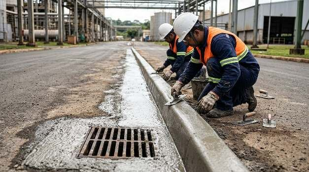
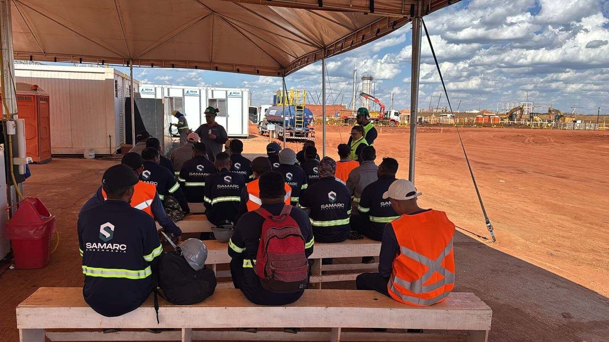
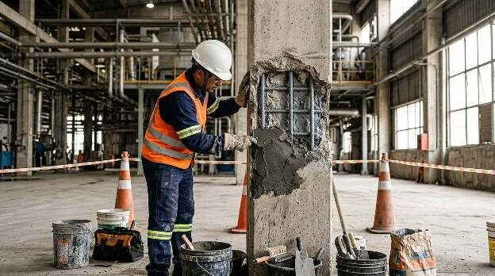
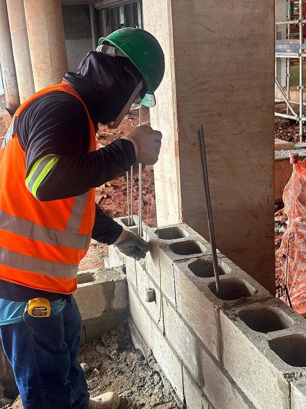
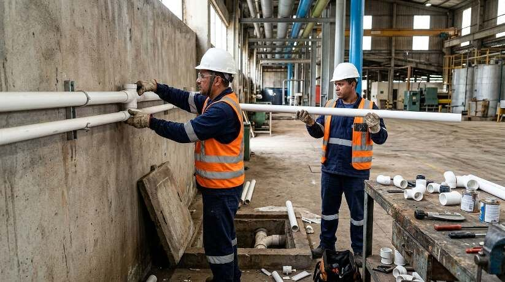
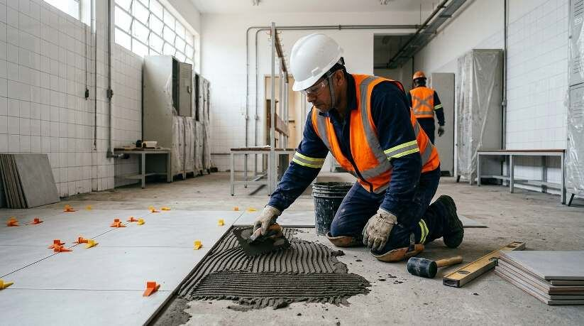
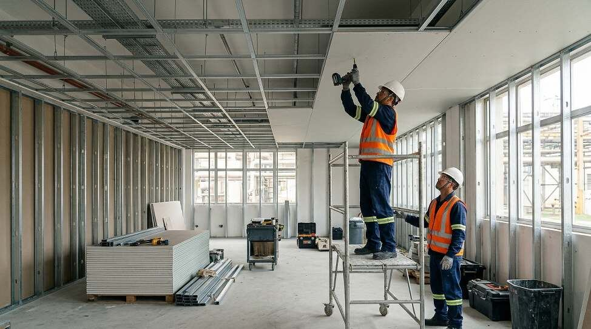
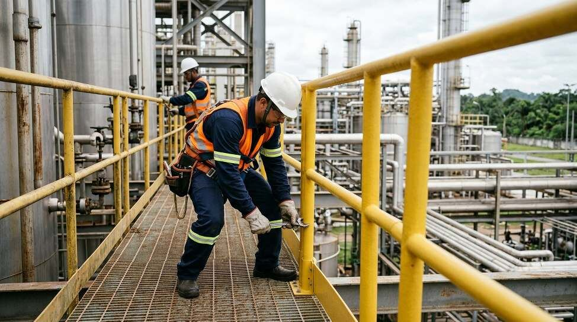

Calçadas, meio-fio, sarjeta e boca de lobo
Manutenção e execução de passeios, guias, sarjetas e captação de águas pluviais nas vias internas.

A Samarc agora é Saccani Engenharia
Manutenção e execução civil de área fabril, com equipe própria e trabalho alinhado às paradas programadas da sua produção.
A empresa
A Saccani Engenharia nasceu em Marília, SP, em 2023, fundada por Marcelo Saccani e Samuel Araujo. Atuamos dentro de fábricas em funcionamento, onde cada intervenção precisa conviver com a rotina de produção, com as regras de segurança da planta e com janelas curtas de parada.
Com o novo nome, mantemos a mesma equipe, o mesmo jeito de trabalhar e os mesmos contratos. Samarc agora é Saccani.
Celulose, química e alimentos.
Convívio com a rotina de produção.
Civil, hidráulica e acabamentos.

Serviços
Oito frentes de serviço civil para manter a área fabril segura, funcional e em dia.

Manutenção e execução de passeios, guias, sarjetas e captação de águas pluviais nas vias internas.

Recuperação de pilares, vigas, lajes e bases de equipamentos em concreto armado.

Recomposição, fechamentos e reparos em prédios industriais e de apoio.

Manutenção e execução de redes de água, esgoto e drenagem, com ramais, prumadas e pontos.

Pintura de paredes, estruturas e áreas de apoio, programada conforme a rotina da operação.

Pisos e revestimentos em vestiários, sanitários, refeitórios e laboratórios.

Execução e manutenção de forros e divisórias em drywall para salas técnicas e administrativas.

Instalação e manutenção de guarda-corpos em fibra de vidro, resistentes à corrosão em áreas químicas e úmidas.
Como trabalhamos
Levantamento em campo da área, das interferências com a operação e das regras de acesso da planta.
Proposta com escopo fechado, cronograma e equipe dimensionada para a janela disponível.
Integração de segurança, documentação da equipe e preparação de materiais antes da parada.
Serviço executado dentro da parada programada, com área limpa e liberada para a produção.
Setores atendidos
Obras
Uma seleção de obras e manutenções executadas pela equipe em plantas de grandes indústrias.
Passos · MS


Ribas do Rio Pardo · MS
Manutenção civil na estação de tratamento de água da unidade, executada com a planta em operação.
Solicite uma visita técnica com escopo, prazo e equipe dimensionada.
Falar no WhatsApp · (14) 98198-0011Contato
Atendimento a plantas industriais em todo o Brasil.